Android App
Installation
OpenLP gives you the ability to control your service from an Android based smartphone. The following tutorial will describe how to install and use the application. For this example we will be using a LG G2. Other Android smartphones or tablets may vary slightly in appearance.
Open the Google Play Store app and search for OpenLP, and you will find OpenLP - Remote 2. As an alternative use this link to go to the apps page in Google Play Store. Now install the app.
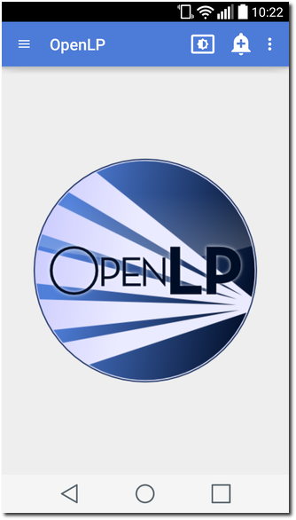You can now start the app and when you do you will see the startup screen.
Android application settings
After the installation is complete and you open the OpenLP Android application you will need to configure your preferences and settings.
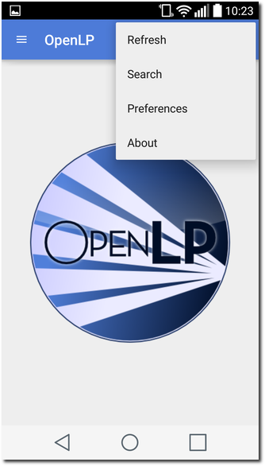Open the settings by opening the menu in the top right corner and choosing Settings. This will show the preferences.
Display Text Size
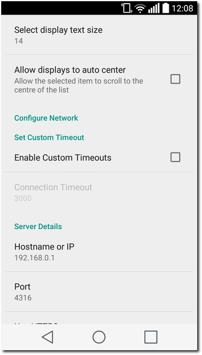- Select display text size:
- This allows you to change the font size for the application display.
Auto center display
- Allow displays to auto center:
- Check this box to allow the selected item to scroll to the centre of the list.
Set Custom Timeout
In general the OpenLP Android application will work fine without having to change the custom timeout settings. If you experience connection issues or are having trouble staying connected, you can change these settings.
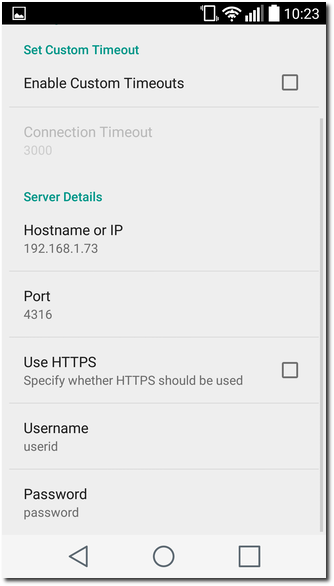- Enable Custom Timeout:
- Check this box to enable setting a custom timeout.
- Connection Timeout:
- Once Custom Timeout has been enabled you can set a custom connection timeout here.
Server Details
You will need to configure the server settings you will use with your phone. You can find these instructions and settings in the OpenLP desktop application under Remote.
Note: To use the Android application you will need to be on the same network as the main computer.
- Hostname or IP:
- Enter the Server on IP address found in Remote. After entering the IP address in the box select OK
- Port:
- Enter the Port number found in Remote and enter it in the box. By default this is 4316. After entering the port number select OK.
- Use HTTPS:
- This specifies if HTTPS should be used. Note: To use HTTPS you must setup OpenLP to be secure, see Server Settings - Secure.
- Username:
- Here you can enter a username used for accessing OpenLP remotely. This must be the same as set in User Authentication.
- Password:
- Here you can enter a password used for accessing OpenLP remotely. This must be the same as set in User Authentication.
Using OpenLP Android Application
After you have completed the setup you are now ready to use the app. Touch the menu button in the top left corner to see the list of views the app supports.
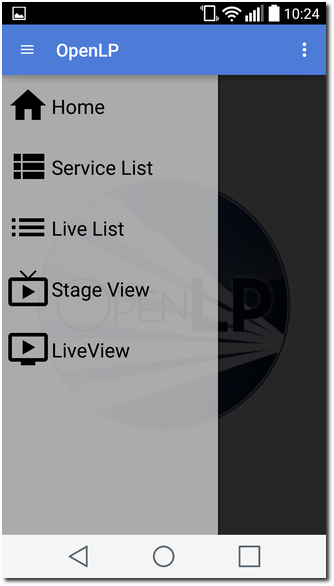Service List
Selecting Service List will take you to the Service Manager. Selecting an item with a in the service manager will immediately take it live on the projection screen and you will stay on the service screen on your device. You can use the arrows buttons shown on the bottom left and right to move to the next slide inside the item.
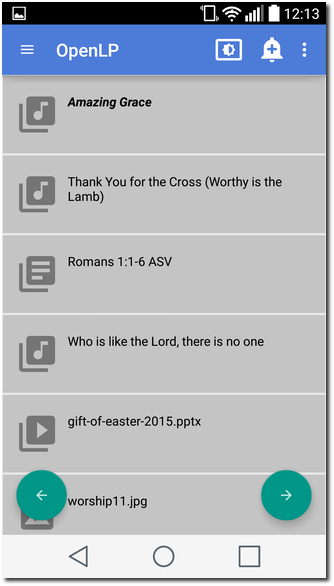Live List
Selecting Live List will display what ever is in Service Manager at the time, or what is live at the moment. If there are items in the Service Manager they will be shown on the left, and the live item will be shown on the right. You can use the arrows buttons shown on the bottom left and right to move to the next slide inside the item.
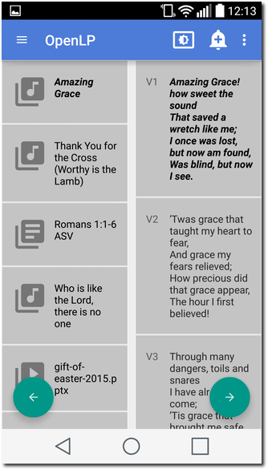When using the Live List it can be an advantage to use the device in landscape mode.
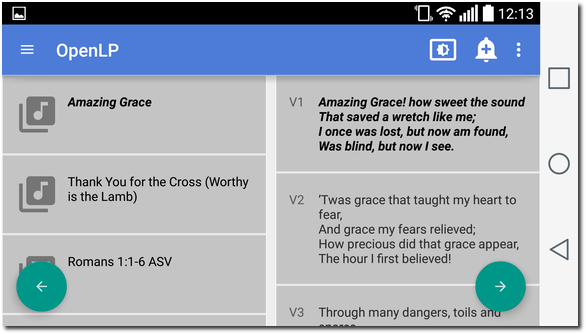Stage View
Selecting Stage View will display the stage view on your Android device. See the The Stage View section in the manual for a detailed description.
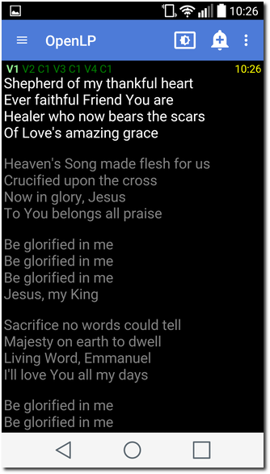Live View
Selecting Live View will display the live view on your Android device. See the The Live View section in the manual for a detailed description.
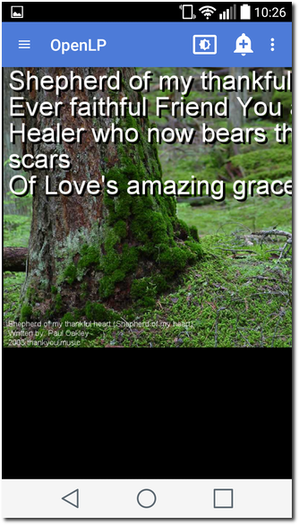Alert
To send an alert to the display, touch the alert button at the top right of the screen.
Alert button
You can send an alert to the display by entering the text in the box and clicking on Process. The alert will be displayed as you have it configured in Alerts.
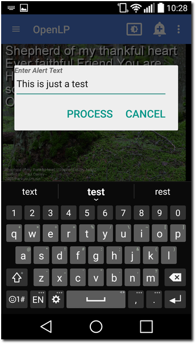Blank Display
To blank the display, touch the blank button at the top right of the screen.
Blank button
Using the display blank type gives you the ability to blank your screen to the methods described below. You can find out more about this feature and how it operates on the main computer at Using the “Blank to” Control.
- Show Live:
- Do not blank, or unblank the display.
- Display Blank:
- Choosing this option will blank your projector to black as if it were shut off.
- Display Theme:
- Choosing this option will show your blank theme only, without lyrics or verses. If you are blanking a song with an assigned theme it will blank to that theme. If no theme is assigned or you are blanking a presentation or image, it will blank to the global theme.
- Display Desktop:
- Choosing this option will show your desktop wallpaper or a program that you have open on the extended monitor or projector. You can seamlessly switch between the desktop wallpaper or a program and OpenLP by Blank to Desktop.